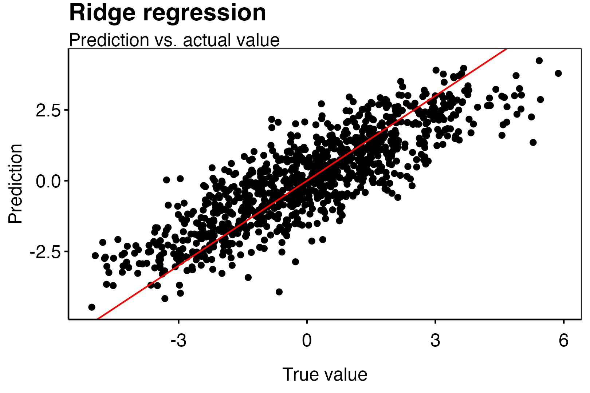

3.2 Week 2
From now on, given sample size \(n\), a dimension \(p\), and a correlation parameter \(0\le \texttt{rho}<1\) we will generate data \(X\) via the following code.
z_1 <- rnorm(p*n,0,(1-rho)^(1/2))
z_0 <- rnorm(n,0,rho^(1/2))
X <- 2.5*atan(z_1+z_0)/pi
dim(X) <- c(n,p)The resulting features will have approximately support on \([−1, 1]\) and will have approximately pairwise correlation of size \(\texttt{rho}\). Given the distribution of \(\varepsilon\) and a regression function \(m\), we then generate data \((X_i,Y_i)_{i=1,...,n}\) via
\[ Y_i=m(X_i)+\varepsilon_i, \]
where \(\varepsilon_i\) are iid copies of \(\varepsilon\) and \(X_i\) is the \(i\)th row of \(X\).
Exercise 1. We want to try out ordinary least squares regression, lasso, ridge regression and elastic net on some different data generating settings (Model 1–4).
| n | p | s | rho | m | \(\varepsilon\) | |
|---|---|---|---|---|---|---|
| Model 1 | 1000 | 100 | 5 | 0.3 | \(\sum_{j=1}^s x_j\) | \(\mathcal N(0,1)\) |
| Model 2 | 1000 | 100 | 100 | 0.3 | \(\sum_{j=1}^s x_j\) | \(\mathcal N(0,1)\) |
| Model 3 | 1000 | 100 | 5 | 0.3 | \(\sum_{j=1}^s 0.1x_j\) | \(\mathcal N(0,1)\) |
| Model 4 | 1000 | 100 | 100 | 0.3 | \(\sum_{j=1}^s 0.1x_j\) | \(\mathcal N(0,1)\) |
- Given one set of training data for each model tune (i.e. estimate optimal hyperprameter) via 5-fold cross-validation using a search method and number of evals of your choice. You should now have an estimated optimal hyperparameter for every combination of model and method.
- Generate 100 test sets each of size n for every model and calculate empirical mean and standard deviation of the test error for each method and model using the hyperparameters calculated in (a). Create a table of your results (each missing entry should show hyperparameter: mean(sd)):
| Least Squares | Ridge | Lasso | Elastic Net | |
|---|---|---|---|---|
| Model 1 | \(\cdot\) | \(\cdot\) | \(\cdot\) | \(\cdot\) |
| Model 2 | \(\cdot\) | \(\cdot\) | \(\cdot\) | \(\cdot\) |
| Model 3 | \(\cdot\) | \(\cdot\) | \(\cdot\) | \(\cdot\) |
| Model 4 | \(\cdot\) | \(\cdot\) | \(\cdot\) | \(\cdot\) |
- Discuss why test error alone might often not be the (only) quantity of interest.
Solution (a).
We start by simulating the data with the seed 1 for the training data and 2 for testing data.
#Generate data
generateData <- function(n,p,s,rho,m,epsilon,seed) {
set.seed(seed)
z_1 <- rnorm(p*n,0,(1-rho)^(1/2))
z_0 <- rnorm(n,0,rho^(1/2))
X <- 2.5*atan(z_1+z_0)/pi
dim(X) <- c(n,p)
Y <- m(X) + rnorm(n,0,epsilon)
dat <- data.frame(Y = Y, X=X)
return(list(dat=dat,Y=Y,X=X))
}Model 1
We may now estimate under model 1 by setting the parameters and generating the data.
#Model 1
n <- 1000
p <- 100
s <- 5
rho <- 0.3
m <- function(x) { rowSums(x[,1:s])}
epsilon <- 1
data_train <- generateData(n,p,s,rho,m,epsilon,1)$dat
data_test <- generateData(n,p,s,rho,m,epsilon,2)$dat
head(data_train[,1:10])## Y X.1 X.2 X.3 X.4 X.5
## 1 1.8309143 -0.07193125 0.75183303 -0.2377002 0.6451155 -0.3789598
## 2 1.4939672 0.28091848 0.67874915 -0.7546614 0.3929413 0.5626808
## 3 0.3964524 -0.60794426 -0.61996908 0.6615121 0.5492820 0.1712623
## 4 0.1283924 0.65701309 -0.05919154 0.1445119 -0.5932112 -0.7514690
## 5 -2.2628749 0.14449216 -0.02706905 -0.1097656 -0.7651413 -0.8446573
## 6 1.7979838 -0.27896899 -0.65200577 0.5846706 0.6634413 0.5440794
## X.6 X.7 X.8 X.9
## 1 -0.5537303 -0.06689199 -0.4727280 0.4609656
## 2 0.5075691 -0.49311711 0.6294640 -0.3555881
## 3 -0.8191675 -0.89258755 0.3435102 -0.7775838
## 4 0.5050303 -0.21505308 0.4511738 0.6831925
## 5 0.5573768 -0.23918147 -0.2927378 -0.7521317
## 6 -0.4938379 0.52113194 0.1657710 0.1270910head(data_test[,1:10])## Y X.1 X.2 X.3 X.4 X.5
## 1 -2.985333 -0.70532654 -0.06742898 -0.8900989 -0.9190374 0.04862538
## 2 -2.057488 -0.13035879 0.35533591 0.5180006 -0.6532359 -0.81848843
## 3 -2.218149 0.75916886 -0.49168949 -0.3268390 0.1625926 -0.41165505
## 4 -0.176265 -0.77652654 -0.36866613 0.2601691 0.3100563 -0.86620293
## 5 1.780030 0.39826072 -0.06440487 0.8050035 0.8184016 0.50856826
## 6 -2.539077 -0.01983207 0.25397105 -0.7543274 -0.6668646 -0.66975619
## X.6 X.7 X.8 X.9
## 1 -0.8684129 -0.73370531 0.28994890 -0.36455945
## 2 -0.5053897 0.23098162 -0.24853540 0.37132666
## 3 -0.1681142 0.09490974 -0.61895581 -0.36122745
## 4 -0.1963916 -0.59210876 0.43663155 -0.51196618
## 5 0.1529196 -0.36622001 0.66508279 0.09886413
## 6 -0.6373294 -0.71339909 -0.09165955 -0.05701028We can estimate the optimal parameters under least squares estimation with the lm function.
ls_lm <- lm(Y ~ ., data = data_train)We can use predict to see the model prediction vs. the true values.
fit <- data.frame(response = predict(ls_lm,data_test),
truth = data_test$Y)
We can also use mlr3 to tune optimal hyperparameters for a lasso, ridge and elastic net estimator. We start as usual by slitting the data into training and testing datasets and starting a task.
#Load the relevant libraries
library(mlr3)
library(mlr3learners )
library(mlr3tuning)
library(mlr3mbo)
#Start task
task_model1 = as_task_regr(
data_train,
target = "Y",
id = "model1"
)We can now initiate a leaner. We start by fitting the hyperparameter for the lasso learner.
learner_lasso = lrn("regr.glmnet")We use the glmnet as it is an algorithm that solves the minimizing problem
\[ \hat{\beta}_\lambda^{\text {glmnet }} =\underset{\beta \in \mathbb{R}^p}{\arg \min }\left\{\hat{R}_n(\beta)+J_\lambda(\beta)\right\},\hspace{15pt}J_\lambda(\beta)=\lambda \left[\alpha\sum_{j=1}^p\left|\beta_j\right|+\frac{1-\alpha}{2}\sum_{j=1}^p\beta_j^2\right], \]
One may recall that the lasso estimator is given by
\[ \hat{\beta}_\lambda^{\text {lasso }} =\underset{\beta \in \mathbb{R}^p}{\arg \min }\left\{\hat{R}_n(\beta)+J_\lambda(\beta)\right\},\hspace{15pt}J_\lambda(\beta)=\lambda \sum_{j=1}^p\left|\beta_j\right|, \]
and so the lasso estimator is a specialcase of the glmnet with \(\alpha=1\). From the above we see that the minimizing algorithm punishes large beta’s. The hyperparameter to tune is then \(\lambda\ge 0\) (s is the syntax for \(\lambda\)). Looking at the parameters in the learner_lasso one can see the entire hyperparameter space.
as.data.table(learner_lasso $param_set)[, list(id, class, lower, upper, nlevels)]## id class lower upper nlevels
## 1: alignment ParamFct NA NA 2
## 2: alpha ParamDbl 0 1 Inf
## 3: big ParamDbl -Inf Inf Inf
## 4: devmax ParamDbl 0 1 Inf
## 5: dfmax ParamInt 0 Inf Inf
## 6: eps ParamDbl 0 1 Inf
## 7: epsnr ParamDbl 0 1 Inf
## 8: exact ParamLgl NA NA 2
## 9: exclude ParamInt 1 Inf Inf
## 10: exmx ParamDbl -Inf Inf Inf
## 11: family ParamFct NA NA 2
## 12: fdev ParamDbl 0 1 Inf
## 13: gamma ParamDbl -Inf Inf Inf
## 14: grouped ParamLgl NA NA 2
## 15: intercept ParamLgl NA NA 2
## 16: keep ParamLgl NA NA 2
## 17: lambda ParamUty NA NA Inf
## 18: lambda.min.ratio ParamDbl 0 1 Inf
## 19: lower.limits ParamUty NA NA Inf
## 20: maxit ParamInt 1 Inf Inf
## 21: mnlam ParamInt 1 Inf Inf
## 22: mxit ParamInt 1 Inf Inf
## 23: mxitnr ParamInt 1 Inf Inf
## 24: newoffset ParamUty NA NA Inf
## 25: nlambda ParamInt 1 Inf Inf
## 26: offset ParamUty NA NA Inf
## 27: parallel ParamLgl NA NA 2
## 28: penalty.factor ParamUty NA NA Inf
## 29: pmax ParamInt 0 Inf Inf
## 30: pmin ParamDbl 0 1 Inf
## 31: prec ParamDbl -Inf Inf Inf
## 32: relax ParamLgl NA NA 2
## 33: s ParamDbl 0 Inf Inf
## 34: standardize ParamLgl NA NA 2
## 35: standardize.response ParamLgl NA NA 2
## 36: thresh ParamDbl 0 Inf Inf
## 37: trace.it ParamInt 0 1 2
## 38: type.gaussian ParamFct NA NA 2
## 39: type.logistic ParamFct NA NA 2
## 40: type.multinomial ParamFct NA NA 2
## 41: upper.limits ParamUty NA NA Inf
## id class lower upper nlevelsLet us tune a lasso learner by setting alpha = 1 and tuning s = totune(0,1) i.e. searching for \(\lambda \in [0,1]\).
#Define the learner
my_lasso_learner = lrn("regr.glmnet",
s= to_tune(0, 1),
alpha=1)
#Tune the learner
instance = tune(
method = tnr("mbo"), ### tuning method
task = task_model1,
learner = my_lasso_learner,
resampling = rsmp("cv", folds = 5), #### resampling method: 5-fold cross validation
measures = msr("regr.rmse"), #### root mean squared error
terminator = trm("evals", n_evals = 100) #### terminator
)#One might go through the archive
#as.data.table(instance$archive)
instance$result## s learner_param_vals x_domain regr.rmse
## 1: 0.06178124 <list[3]> <list[1]> 1.037023Now that we have tuned the algorithm we can fit the model with the above \(s\) (0.0618).
lasso_tuned = lrn("regr.glmnet")
lasso_tuned$param_set$values = instance$result_learner_param_vals
lasso_tuned$train(task_model1)Lets quickly look at the predictions.
predictions = lasso_tuned$predict_newdata(data_test)
One can get the coefficients of \(\beta\) by predicting the data frame I = diag(1,nrow = 100) being the identity.
#Make identity matrix
I <- diag(x=1,nrow = p) %>% as.data.frame()
colnames(I) <- colnames(data_train)[2:(p+1)]
predictions = lasso_tuned$predict_newdata(I)
beta_lasso <- predictions$response #Look at the beta
beta_lasso## [1] 0.99915093 0.79086275 0.99541349 0.94102686 0.93627752 0.03315185
## [7] 0.03315185 0.03315185 0.03315185 0.03315185 0.10981076 0.03315185
## [13] 0.03315185 0.03315185 0.03315185 0.03315185 0.03315185 0.03315185
## [19] 0.03315185 0.03315185 0.03315185 0.03315185 0.03315185 0.03315185
## [25] 0.03315185 0.03315185 0.03315185 0.03315185 0.03315185 0.03315185
## [31] 0.03315185 0.03315185 0.03315185 0.03315185 0.03315185 0.03315185
## [37] 0.03315185 0.03315185 0.03315185 0.03315185 0.03315185 0.03315185
## [43] 0.03315185 0.03315185 0.03315185 0.03315185 0.03315185 0.03315185
## [49] 0.03315185 0.03315185 0.03315185 0.03315185 0.03315185 0.03315185
## [55] 0.03315185 0.03315185 0.03315185 0.03315185 0.03315185 0.03315185
## [61] 0.03315185 0.03315185 0.03315185 0.03315185 0.03315185 0.03315185
## [67] 0.14390239 0.03315185 0.03315185 0.03315185 0.03315185 0.03315185
## [73] 0.03315185 0.07565291 0.03315185 0.03315185 0.03315185 0.03315185
## [79] 0.03315185 0.03315185 0.03315185 0.03315185 0.03315185 0.03315185
## [85] 0.03315185 0.03315185 0.03315185 0.03315185 0.03315185 0.03315185
## [91] 0.03315185 0.03315185 0.03315185 0.03315185 0.06264766 0.04897566
## [97] 0.03315185 0.03315185 0.03315185 0.03315185One can see that the values is close to the true value \(\beta=(1,1,1,1,1,0,...,0)\).
We can now estimate the parameters in ridge regression by setting \(\alpha = 0\) and then getting a scaled version of \(\lambda\).
#Define the learner
my_ridge_learner = lrn("regr.glmnet",
s= to_tune(0, 1),
alpha=0)
#Tune the learner
instance = tune(
method = tnr("mbo"), ### tuning method
task = task_model1,
learner = my_ridge_learner,
resampling = rsmp("cv", folds = 5), #### resampling method: 5-fold cross validation
measures = msr("regr.rmse"), #### root mean squared error
terminator = trm("evals", n_evals = 100) #### terminator
)#One might go through the archive
#as.data.table(instance$archive)
instance$result## s learner_param_vals x_domain regr.rmse
## 1: 0.2199674 <list[3]> <list[1]> 1.100857We fit the model with the above \(s\) (0.22).
ridge_tuned = lrn("regr.glmnet")
ridge_tuned$param_set$values = instance$result_learner_param_vals
ridge_tuned$train(task_model1)Lets quickly look at the predictions.
predictions = ridge_tuned$predict_newdata(data_test)
For good measures we calculate the beta’s as in lasso.
#Make identity matrix
I <- diag(x=1,nrow = p) %>% as.data.frame()
colnames(I) <- colnames(data_train)[2:(p+1)]
predictions <- ridge_tuned$predict_newdata(I)
beta_ridge <- predictions$response #Look at the beta
beta_ridge## [1] 9.572446e-01 7.686100e-01 9.449922e-01 9.287205e-01 8.981642e-01
## [6] 9.963081e-02 1.190889e-01 6.680920e-02 -2.360800e-02 2.529436e-02
## [11] 2.085035e-01 -1.952593e-02 2.693690e-03 -6.889561e-02 2.116001e-02
## [16] 2.781748e-02 1.121865e-01 9.137978e-02 2.454655e-02 4.820396e-02
## [21] 4.539692e-02 -1.432497e-03 1.660669e-02 7.668634e-02 7.671318e-02
## [26] 4.975334e-02 7.260690e-02 -8.629362e-03 7.456080e-02 5.825794e-02
## [31] -4.527776e-02 6.807175e-02 -1.271848e-02 -2.748982e-02 1.203625e-01
## [36] 7.651944e-02 6.392636e-02 1.101667e-02 1.734406e-02 6.945025e-02
## [41] 2.999642e-02 -3.187841e-02 -1.155532e-01 -5.211477e-02 5.219365e-02
## [46] 8.412732e-05 2.443844e-02 1.710180e-02 -4.820703e-02 5.932595e-02
## [51] -4.195687e-03 3.171758e-02 8.042820e-03 -4.803883e-02 3.413274e-02
## [56] 5.680607e-02 2.805170e-03 1.155576e-02 9.527637e-02 -4.649393e-02
## [61] -1.231626e-02 8.193416e-02 1.487057e-02 -7.600475e-03 7.944417e-02
## [66] -2.025782e-02 1.928551e-01 2.477441e-02 6.769122e-03 3.546825e-02
## [71] 1.145399e-01 6.519184e-03 3.783939e-02 1.520270e-01 5.808354e-02
## [76] -5.988705e-03 -9.409675e-03 -5.117966e-02 -5.673331e-02 1.858218e-02
## [81] 7.114004e-02 -6.238344e-02 -5.586778e-02 4.614891e-02 1.147374e-02
## [86] 7.358890e-02 -7.752170e-02 4.166919e-02 -3.679839e-02 1.558774e-02
## [91] 5.154878e-02 9.195644e-02 7.103979e-02 8.703200e-02 1.601304e-01
## [96] 1.444098e-01 5.452382e-02 -8.407149e-02 -6.720288e-02 8.402896e-02Finally, let us tune an elastic net.
#Define the learner
my_elastic_learner = lrn("regr.glmnet",
s= to_tune(0, 1),
alpha= to_tune(0,1))
#Tune the learner
instance = tune(
method = tnr("mbo"), ### tuning method
task = task_model1,
learner = my_elastic_learner,
resampling = rsmp("cv", folds = 5), #### resampling method: 5-fold cross validation
measures = msr("regr.rmse"), #### root mean squared error
terminator = trm("evals", n_evals = 100) #### terminator
)#One might go through the archive
#as.data.table(instance$archive)
instance$result## s alpha learner_param_vals x_domain regr.rmse
## 1: 0.0623403 0.9998859 <list[3]> <list[2]> 1.037026We fit the model with the above \(s\) (0.0623).
elastic_tuned = lrn("regr.glmnet")
elastic_tuned$param_set$values = instance$result_learner_param_vals
elastic_tuned$train(task_model1)Lets quickly look at the predictions.
predictions = elastic_tuned$predict_newdata(data_test)For good measures we calculate the beta’s as in lasso.
#Make identity matrix
I <- diag(x=1,nrow = p) %>% as.data.frame()
colnames(I) <- colnames(data_train)[2:(p+1)]
predictions <- elastic_tuned$predict_newdata(I)
beta_elastic <- predictions$response #Look at the beta
beta_elastic## [1] 0.99882093 0.79064649 0.99510364 0.94068530 0.93595611 0.03316896
## [7] 0.03316896 0.03316896 0.03316896 0.03316896 0.10956374 0.03316896
## [13] 0.03316896 0.03316896 0.03316896 0.03316896 0.03316896 0.03316896
## [19] 0.03316896 0.03316896 0.03316896 0.03316896 0.03316896 0.03316896
## [25] 0.03316896 0.03316896 0.03316896 0.03316896 0.03316896 0.03316896
## [31] 0.03316896 0.03316896 0.03316896 0.03316896 0.03316896 0.03316896
## [37] 0.03316896 0.03316896 0.03316896 0.03316896 0.03316896 0.03316896
## [43] 0.03316896 0.03316896 0.03316896 0.03316896 0.03316896 0.03316896
## [49] 0.03316896 0.03316896 0.03316896 0.03316896 0.03316896 0.03316896
## [55] 0.03316896 0.03316896 0.03316896 0.03316896 0.03316896 0.03316896
## [61] 0.03316896 0.03316896 0.03316896 0.03316896 0.03316896 0.03316896
## [67] 0.14366364 0.03316896 0.03316896 0.03316896 0.03316896 0.03316896
## [73] 0.03316896 0.07532564 0.03316896 0.03316896 0.03316896 0.03316896
## [79] 0.03316896 0.03316896 0.03316896 0.03316896 0.03316896 0.03316896
## [85] 0.03316896 0.03316896 0.03316896 0.03316896 0.03316896 0.03316896
## [91] 0.03316896 0.03316896 0.03316896 0.03316896 0.06245603 0.04861821
## [97] 0.03316896 0.03316896 0.03316896 0.03316896Let’s lastly look at how the different estimators do with respect to the true beta.

We may now estimate the remaining three models.
Model 2-4. We generate the data and estimate under the model. We define a function that compute the estimators.
getEstimates <- function(n,p,s,rho,m,epsilon){
#Get data
data_train <- generateData(n,p,s,rho,m,epsilon,1)$dat
data_test <- generateData(n,p,s,rho,m,epsilon,2)$dat
#Identity matrix for parameters
I <- diag(x=1,nrow = p) %>% as.data.frame()
colnames(I) <- colnames(data_train)[2:(p+1)]
#Make ls model
ls_lm <- lm(Y ~ ., data = data_train)
beta_ls <- predict(ls_lm,I)
predictions_ls <- predict(ls_lm,data_test)
#Make task
task_model = as_task_regr(
data_train,
target = "Y"
)
#Tune lasso
my_lasso_learner <- lrn("regr.glmnet",
s= to_tune(0, 1),
alpha= 1)
lasso_instance <- tune(
method = tnr("mbo"), ### tuning method
task = task_model,
learner = my_lasso_learner,
resampling = rsmp("cv", folds = 5), #### resampling method: 5-fold cross validation
measures = msr("regr.rmse"), #### root mean squared error
terminator = trm("evals", n_evals = 100) #### terminator
)
lasso_tuned = lrn("regr.glmnet")
lasso_tuned$param_set$values = lasso_instance$result_learner_param_vals
lasso_tuned$train(task_model)
predictions_lasso = lasso_tuned$predict_newdata(data_test)
beta_lasso <- lasso_tuned$predict_newdata(I)$response
#Tune ridge
my_ridge_learner <- lrn("regr.glmnet",
s= to_tune(0, 1),
alpha= 0)
ridge_instance <- tune(
method = tnr("mbo"), ### tuning method
task = task_model,
learner = my_ridge_learner,
resampling = rsmp("cv", folds = 5), #### resampling method: 5-fold cross validation
measures = msr("regr.rmse"), #### root mean squared error
terminator = trm("evals", n_evals = 100) #### terminator
)
ridge_tuned = lrn("regr.glmnet")
ridge_tuned$param_set$values = ridge_instance$result_learner_param_vals
ridge_tuned$train(task_model)
predictions_ridge = ridge_tuned$predict_newdata(data_test)
beta_ridge <- ridge_tuned$predict_newdata(I)$response
#Tune elastic net
my_elastic_learner <- lrn("regr.glmnet",
s= to_tune(0, 1),
alpha= to_tune(0, 1))
elastic_instance <- tune(
method = tnr("mbo"), ### tuning method
task = task_model,
learner = my_elastic_learner,
resampling = rsmp("cv", folds = 5), #### resampling method: 5-fold cross validation
measures = msr("regr.rmse"), #### root mean squared error
terminator = trm("evals", n_evals = 100) #### terminator
)
elastic_tuned = lrn("regr.glmnet")
elastic_tuned$param_set$values = elastic_instance$result_learner_param_vals
elastic_tuned$train(task_model)
predictions_elastic = elastic_tuned$predict_newdata(data_test)
beta_elastic <- elastic_tuned$predict_newdata(I)$response
#Combine beta's
beta_true <- m(diag(1,nrow = p))
beta <- data.frame(
j = 1:p,
true = beta_true,
ls = beta_ls,
lasso = beta_lasso,
ridge = beta_ridge,
elastic_net = beta_elastic
)
#Combining predictions
predictions <- data.frame(
i = 1:n,
Truth = data_test$Y,
ls = predictions_ls,
lasso = predictions_lasso$response,
ridge = predictions_ridge$response,
elastic_net = predictions_elastic$response
)
return(list(
data_train = data_train,
data_test = data_test,
beta = beta,
predictions = predictions,
instances = list(
lasso = lasso_instance,
ridge = ridge_instance,
elastic_net = elastic_instance
)
))
}Now we simply gather the results.
results1 <- getEstimates(
n = 1000, p = 100, s = 5, rho = 0.3, epsilon = 1,
m = function(x){rowSums(x[,1:5])}
)
results2 <- getEstimates(
n = 1000, p = 100, s = 100, rho = 0.3, epsilon = 1,
m = function(x){rowSums(x[,1:100])}
)
results3 <- getEstimates(
n = 1000, p = 100, s = 5, rho = 0.3, epsilon = 1,
m = function(x){rowSums(0.1*x[,1:5])}
)
results4 <- getEstimates(
n = 1000, p = 100, s = 100, rho = 0.3, epsilon = 1,
m = function(x){rowSums(0.1*x[,1:100])}
)Solution (b).
We simply generate \(N=100\) test sets and compute the mean squared error for each run, then take the empirical mean and standard deviation of the 100 samples of the empirical mean squared error.
N <- 100
computeMSE <- function(n,p,s,rho,m,epsilon,results,N){
MSE <- sapply(1:N+1, function(j) {
#Get data
data_test <- generateData(n,p,s,rho,m,epsilon,j)$dat
mse_ls <- mean((data_test$Y - as.matrix(data_test[,2:(p+1)]) %*% results$beta$ls)^2)
mse_lasso <- mean((data_test$Y - as.matrix(data_test[,2:(p+1)]) %*% results$beta$lasso)^2)
mse_ridge <- mean((data_test$Y - as.matrix(data_test[,2:(p+1)]) %*% results$beta$ridge)^2)
mse_elastic <- mean((data_test$Y - as.matrix(data_test[,2:(p+1)]) %*% results$beta$elastic_net)^2)
return(c(mse_ls,mse_lasso,mse_ridge,mse_elastic))
})
df <- data.frame(
method = c("LS","Lasso","Ridge","Elastic net"),
mean_MSE = rowMeans(MSE),
sd_MSE = sapply(1:4, function(i) sd(MSE[i,]))
)
return(df)
}
MSE_model1 <- computeMSE(
n = 1000, p = 100, s = 5, rho = 0.3, epsilon = 1,
m = function(x){rowSums(x[,1:5])},
results = results1, N
)
MSE_model2 <- computeMSE(
n = 1000, p = 100, s = 100, rho = 0.3, epsilon = 1,
m = function(x){rowSums(x[,1:5])},
results = results2, N
)
MSE_model3 <- computeMSE(
n = 1000, p = 100, s = 5, rho = 0.3, epsilon = 1,
m = function(x){rowSums(0.1*x[,1:5])},
results = results3, N
)
MSE_model4 <- computeMSE(
n = 1000, p = 100, s = 100, rho = 0.3, epsilon = 1,
m = function(x){rowSums(0.1*x[,1:5])},
results = results4, N
)
MSE_means <- rbind(
MSE_model1$mean_MSE,MSE_model2$mean_MSE,
MSE_model3$mean_MSE,MSE_model4$mean_MSE
)
colnames(MSE_means) <- c("Least Squares","Lasso","Ridge","Elastic net")
row.names(MSE_means) <- c("Model 1","Model 2","Model 3", "Model 4")
library(kableExtra)
kbl(MSE_means)| Least Squares | Lasso | Ridge | Elastic net | |
|---|---|---|---|---|
| Model 1 | 1.512701 | 1.839267 | 1.579840 | 1.843050 |
| Model 2 | 797.525805 | 788.769559 | 793.827888 | 793.827772 |
| Model 3 | 1.512701 | 1.885876 | 1.705212 | 1.890599 |
| Model 4 | 12.609626 | 12.198187 | 13.090003 | 12.987817 |
Solution (c).
In general, it is better to have as small of a test error as possible. It it however also important not to overcomplicate the model if not all variables is relevant. Ridge regression does well in the models with fewer explanatory variable \(s\) as it punishes under \(L^2\) distance rather than \(L^1\). This means that ridge does a better job in setting \(\beta_j\approx 0\) for \(j> s\).